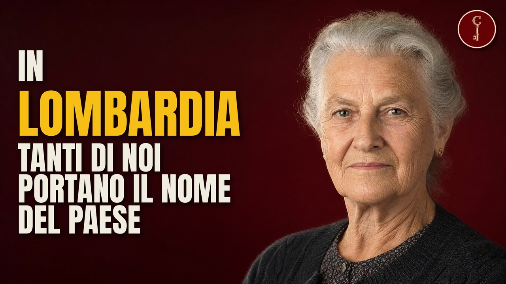

La LOMBARDIA raccontata da 30 cognomi: trovatelli, valli e ladri di polli

Guarda il video su YouTubeSe ti chiami Colombo, Sala, Cattaneo, Villa o Brambilla, o porti uno dei cognomi che in Lombardia trovi su ogni campanello, nel tuo nome c'è già scritta una storia: un paese, un mestiere, un soprannome, a volte la porta di un ospedale. In Lombardia i cognomi vengono da tre mondi. Quello dei paesi e delle valli, dalla Brianza alla Val Imagna, che hanno dato il nome a chi ci viveva. Quello delle botteghe e delle piazze, dove un mestiere o uno sfottò diventavano un'etichetta per sempre. E quello della ruota della Ca' Granda di Milano, dove per secoli venivano lasciati i bambini che nessuno poteva tenere.
Le fonti, capitolo per capitolo
Solo le fonti che sostengono qualcosa detto nel video, capitolo per capitolo, nell'ordine in cui il video le usa.
22 · Invernizzi
21 · Tagliabue
13 · Ferrario
7 · Locatelli
6 · Riva
4 · Villa
3 · Cattaneo
2 · Sala
Chiusura
Materiali
Attribuzioni di immagini e video

vedi pagina del file · CC BY 3.0
.jpg){kind=link}
Dossig · CC BY-SA 3.0

Walter63pell · CC BY-SA 3.0

Syrio · CC BY-SA 4.0

Joalpe · CC BY-SA 4.0
.jpg){kind=link}
Carlo Dell'Orto · CC BY-SA 4.0

Sailko · CC BY-SA 3.0

Ago76 · CC BY-SA 3.0

Zairon · CC BY-SA 4.0

Kweedado2 · CC BY-SA 4.0

vedi pagina del file · CC BY 2.5
.jpg){kind=link}
Glz19 · CC BY-SA 4.0

Accurimbono · CC BY-SA 4.0

Desmodromico · CC BY-SA 4.0

Pietroarco · CC BY-SA 4.0

Bernardo Bellotto · CC BY-SA 4.0

sconosciuto · CC BY 4.0

Francesco Bini · CC BY-SA 4.0

sconosciuto · CC BY 4.0

Stefanotomasini · CC BY-SA 3.0

Luigi Chiesa · CC BY 3.0

Deangelig58 · CC BY-SA 4.0

Daniel Case · CC BY-SA 3.0

Daniel Case · CC BY-SA 3.0

Enrico Liberatori · CC BY-SA 4.0

Marcelo Baseggio · CC BY-SA 4.0
.jpg){kind=link}
Monica Kaneko from Sao Paulo, Brasil · CC BY-SA 2.0

Érico Andrei (ericof) · CC BY-SA 2.5

Nadelschwein · CC BY 3.0

Van Loon · CC BY 3.0

Mario Falcetti · CC BY 4.0

Sailko · CC BY-SA 4.0
.jpg){kind=link}
CristianNX · CC BY-SA 4.0

Mario Falcetti · CC BY-SA 4.0
_.jpg){kind=link}
Giovigaetano · CC BY-SA 4.0

Sailko · CC BY 3.0

Phyrexian · CC BY-SA 4.0

Plumbago Capensis · CC BY-SA 4.0

it:mattiabellani · CC BY-SA 3.0
Werner Friedli · CC BY-SA 4.0

vedi pagina del file · CC BY-SA 2.0

Antonov · CC BY-SA 4.0

Zairon · CC BY-SA 4.0

Zairon · CC BY-SA 4.0

Ottantafame · CC BY-SA 4.0

tetraktys · CC BY-SA 3.0

tetraktys · CC BY-SA 3.0

Emanuela campara · CC BY-SA 4.0

luca_s · CC BY-SA 4.0

vedi pagina del file · CC BY-SA 4.0

Vanni Lazzari · CC BY-SA 4.0
.jpg){kind=link}
Radosław Botev · CC BY 3.0 pl

Settimioma · CC BY-SA 4.0

Knothema · CC BY-SA 4.0
.jpg){kind=link}
N i c o l a from Fiumicino (Rome), Italy · CC BY 2.0

Classical Numismatic Group · CC BY-SA 2.5
.jpg){kind=link}
Sailko · CC BY 3.0

Barbaragerosa · CC BY-SA 4.0
.jpg){kind=link}
Croes, Rob C. for Anefo · CC BY-SA 3.0 nl
.jpg){kind=link}
Croes, Rob C. for Anefo · CC BY-SA 3.0 nl

Ettoke · CC BY-SA 4.0

Maurizio Moro5153 · CC BY-SA 4.0
.jpg){kind=link}
Gervacio Rosales · CC BY 3.0

RoseHAN · CC BY-SA 4.0
_-_Archivio_Storico_Ricordi_ICON012054.jpg){kind=link}
Carlo Ferrario · CC BY-SA 4.0

Sailko · CC BY-SA 4.0
_-_facciata_principale_2.JPG){kind=link}
Dario Crespi · CC BY-SA 3.0

Viaggiamocela · CC BY-SA 4.0

Franciaio · CC BY-SA 4.0

Phyrexian · CC BY-SA 4.0

Kenneth C. Zirkel · CC BY 4.0

Kenneth C. Zirkel · CC BY-SA 4.0

Mik2001 · CC BY-SA 4.0

sconosciuto · CC BY-SA 3.0

Veronica Muoio · CC BY-SA 4.0

Marchetto da Trieste · CC BY-SA 4.0

Superchilum · CC BY-SA 4.0

cisko66 · CC BY 3.0

cisko66 · CC BY 3.0
.jpg){kind=link}
Ago76 · CC BY-SA 3.0

Sailko · CC BY-SA 4.0

Davidegalbiati · CC BY-SA 4.0

Giorces · CC BY 2.5

Giorces · CC BY 2.5

Ago76 · CC BY-SA 4.0
.JPG){kind=link}
Ago76 · CC BY-SA 3.0

Amadvance · CC BY-SA 4.0

Ago76 · CC BY-SA 4.0

Deangelig58 · CC BY-SA 4.0

Zairon · CC BY-SA 4.0

Zairon · CC BY-SA 4.0

Игорь Кошельков · CC BY 4.0

Arnaud 25 · CC BY-SA 4.0

vedi pagina del file · CC BY-SA 4.0

FrDr · CC BY-SA 4.0

Pisanello · CC BY-SA 3.0

Zairon · CC BY-SA 4.0

Dans · CC BY-SA 4.0

vedi pagina del file · CC BY-SA 4.0

Raqs Media Collective · CC BY-SA 4.0

Amstead23 · CC BY-SA 4.0

Alessandra Valmadre · CC BY-SA 4.0
.jpg){kind=link}
Norman Jorgensen from Inglewood, Western Australia, Australia · CC BY 2.0

Polloscheggia · CC BY-SA 4.0

Ottantafame · CC BY-SA 4.0

Croberto68 · CC BY 3.0

Syrio · CC BY-SA 4.0

Giovannidiana · CC BY-SA 3.0

Claudio Gioseffi · CC BY-SA 4.0

BelPatty86 · CC BY-SA 4.0

Andrzej Otrębski · CC BY-SA 4.0

vedi pagina del file · CC BY-SA 4.0

vedi pagina del file · CC BY-SA 4.0
Scene ricostruite
Alcune scene sono ricostruite con l'intelligenza artificiale (61 immagini e 25 clip). Non sono documenti né fotografie d'epoca.
Mappe
- Confini amministrativi italiani (openpolis/geojson-italy, dati ISTAT) · CC BY 4.0 · fonte